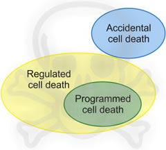

Celdood
1. Inleiding
Het is voor iedereen wel duidelijk dat voor de groei of vernieuwing van cellen in een organisme, proliferatie van cellen via celdeling een noodzakelijk en fysiologisch relevant proces is. Verrassend is misschien dat het voor een multicellulair organisme even belangrijk is om cellen efficiënt en effectief te kunnen doden. Op die manier kan het organisme immers ‘in evenwicht’ gehouden worden.
In de literatuur worden op dit moment veel verschillende vormen van celdood beschreven. Er wordt een duidelijk onderscheid gemaakt tussen ‘passieve’ en ‘actieve’ vormen van celdood. Met spreekt van ‘passieve’ celdood (= ‘passive’ or ‘accidental’ cell death) (Fig. 1), wanneer de cel door externe oorzaken wordt gedood (chemische, fysische,… actoren). Bij de ‘actieve’ vormen van celdood zal in de cel een ‘moleculair mechanisme’ in gang worden gezet. Men spreekt dan ook wel van ‘gereguleerde’ (regulated) celdood. Wanneer gereguleerde celdood optreedt zonder exogene factoren en dus deel uitmaakt van een normaal fysiologisch proces (bvb. de ontwikkeling van vingers tijdens embryonale ontwikkeling), wordt dit ‘geprogrammeerde’ celdood genoemd (Fig. 1). Alle vormen van ‘geprogrammeerde celdood’ zijn dus gereguleerd, maar niet andersom.

Fig. 1 Schematische voorstelling van de nomenclatuur over celdood. Aangezien bij ‘gereguleerde’ celdood de achterliggende moleculaire mechanismen gekend zijn, kan hierop worden ingegrepen dmv. farmaca.
Een ontregeling van gereguleerde celdood kan aanleiding geven tot een groot aantal defecten. Embryonaal kan dit leiden tot afsterven van het embryo of malformaties/afwijkingen bij postnatale ontwikkeling. Een aantal ernstige ziekten bij de mens worden namelijk ofwel veroorzaakt door excessieve celaccumulatie als gevolg van een gebrekkige celvernietiging (zoals soms in het geval van kanker), ofwel door overmatig celverlies ten gevolge van een ontregeld zelfdodingsprogramma (zoals bij de ziekte van Alzheimer). Een grondige kennis van de genen en eiwitten die verantwoordelijk zijn voor gereguleerde celdood zijn dus van strategisch belang voor de ontwikkeling van geneesmiddelen tegen deze ziekten.
De nomenclatuur over celdood was tot voor kort (noodgedwongen!) voornamelijk gebaseerd op morfologische kenmerken, waarin onderscheid werd gemaakt tussen de hoofdvormen: ‘apoptose’ (type I celdood), ‘autofagie’ (type II celdood), en ‘necrose’ (type III celdood) (Fig. 2). Op dit moment weet men echter meer over de achterliggende moleculaire mechanismen, wat maakt dat een nomenclatuur ingang vindt die gebaseerd is op zowel morfologische als moleculaire criteria (Galluzzi et al. 2012; zie tabel 1). Dieper ingaan op al deze verschillende vormen, ligt echter buiten het doel van dit hoofdstuk.
Morfologische classificatie blijft echter een belangrijke rol spelen om economische en methodologische redenen. Hou wel in het achterhoofd dat morfologisch gelijkaardige celdoodvormen soms functionele, biochemische en immunologische heterogeniteit kunnen inhouden. Eerst even de morfologie bestuderen…
2. Apoptose, necrose en autofage celdood: morfologie
Apoptose (Fig. 2) wordt gekenmerkt door krimpen van de cellen, waarbij de celmembraan intact blijft. Celcontacten worden verbroken en de cel laat los uit zijn omgeving. Het cytoplasma wordt gecondenseerd en de organellen opeengepakt. In de celkern treedt er een duidelijke chromatinecondensatie op (bij de oorspronkelijke beschrijving van apoptose was dit het voornaamste fenomeen). De kernenveloppe wordt discontinu, het DNA dat in de kern zit fragmenteert en de kern zal opbreken in chromatinelichaampjes. Doordat de celmembraan intact blijft is er geen lekkage van moleculen naar binnen of buiten de cel. De cel toont karakteristieke uitstulpingen, de zogenaamde ‘blebs’. Uiteindelijk zal de hele cel fragmenteren in kenmerkende apoptose-lichaampjes (apoptotic bodies), die aan de buitenzijde van de plasmamembranen (door externalisatie) fosfatidylserine vertonen, en op die manier een signaal verspreiden waardoor de omringende cellen weten dat ze deze apoptoselichaampjes moeten fagocyteren. De ‘fagocyten’ zijn niet noodzakelijk macrofagen. Zeer belangrijk is dat bij apoptose geen ontstekingsproces wordt geïnduceerd.
Fig. 2. Schematische voorstelling van de morfologische veranderingen die optreden tijdens apoptose, autofagie en necrose
Detectie van apoptose
Om na te gaan of er apoptose in cellen optreedt bestaan er een aantal cytologische kenmerken:
- cel-, kern-, en membraanmorfologie: microscopische visualisatie van chromatine-condensatie,
DNA-organisatie, integriteit van plasmamembraan en cytoplasma - verlies aan viabiliteit (levensvatbaarheid) : gebruik van vitale kleurstoffen
- DNA-fragmentatie: elektroforese; in situ TUNEL (terminaal transferase labeling)
- caspase activatie
Eén van de vroegste kenmerken van apoptose zijn kleine wijzigingen die optreden in de plasmamembraan. Het plasmamembraan-fosfolipide fosfatidylserine (PS), dat in normale cellen geassocieerd is met het binnenblad van de membraan, ondergaat bij apoptose een translocatie naar de buitenzijde van de membraan, waardoor het blootgesteld wordt aan de extracellulaire omgeving. Dit fenomeen kan heel vroeg microscopisch gedetecteerd worden door toediening van fluorescent-gelabeld annexine 5, een PS-bindend proteïne.
Necrose wordt morfologisch (Fig. 2) getypeerd door zwelling van de cellen en organellen, vernietiging van celorganellen en uiteindelijk het verlies van de integriteit van de plasmamembraan. Cellen die necrose ondergaan, zorgen ervoor dat er een pro-inflammatoire signaalcascade ontstaat door het vrijstellen van inflammatoire cytokines en door het vrijstellen van hun celinhoud op het moment dat de cellen lyseren. Celresten worden meestal opgeruimd door macrofagen. Bijgevolg geeft necrotische celdood meestal aanleiding tot een ontstekingsreactie.
Bij autofagie (Fig. 2) worden grote hoeveelheden eiwitten en volledige organellen afgebroken. Cytoplasmafragmenten worden opgenomen in autofagosomen, die vervolgens versmelten met een lysosoom tot autolysosoom. Autofagie is een normaal voorkomend fysiologisch proces dat de cel in staat stelt te overleven in een stressvolle omgeving. Wanneer een cel continu wordt gestimuleerd tot autofagie kan celdood volgen, al is de relatie niet altijd even duidelijk. Momenteel wordt in de literatuur immers geopperd dat in cellen die continu autofagie ondergaan celdood wel ‘afhankelijk’ kan zijn van autofagie, maar niet het rechtstreekse gevolg ervan.
Biochemische criteria maken het mogelijk om een verdere indeling te maken in de verschillende vormen van celdood (Tabel 1). Een gedetailleerde bespreking zou ons echter te ver leiden, zodat we enkel belangrijkste moleculaire kenmerken van apoptose en necrose zullen bespreken.
3. Moleculaire kenmerken van apoptose
Apoptose was tot voor kort de enige gekende vorm van gereguleerde celdood, en daarom tot nu toe de meest gerapporteerde en best onderzochte vorm. Het woord is afkomstig van het Grieks en betekent zoveel als ‘het afvallen van de bladeren van een boom’. Ook hier zullen de bladeren actief deelnemen aan hun eigen vernietiging om het organisme in zijn geheel te beschermen. Apoptose kan dan ook gezien worden als een beveiligingssysteem om overbodige, verouderde, beschadigde of ‘schadelijke’ cellen uit een multicellulair organisme te verwijderen op een ‘propere’ manier.
3.1. Belang van caspasen bij apoptose
De enzymen die verantwoordelijk zijn voor een heleboel van de degeneratieve veranderingen bij apoptose is een familie van cysteineproteasen: de caspasen. De term ‘caspase’ refereert naar de cysteine protease activiteit en naar een klievingsactiviteit na aspartinezuur (Fig. 3). De intracellulaire enzymen worden gesynthetiseerd als inactieve zymogenen (proenzymen) die bestaan uit een N-terminaal domein, een grote subunit en een kleinere C-terminale subunit. Ter hoogte van interne proteolytische sites kunnen deze inactieve pro-caspasen worden gekliefd om actieve caspasen te vormen. Na activering kunnen caspasen hun eigen precursoren klieven of andere procaspasen (zie fig. 3).
Gebaseerd op hun activeringsmechanismen kunnen caspasen worden ingedeeld in initiatoren en effectoren. De initiator-caspasen, zoals bijvoorbeeld het caspase-8 en –9, activeren op hun beurt andere ‘downstream’ effector-caspasen zoals caspase-3, -6 en –7, zodat een versterkte cascade ontstaat. Centraal in het apoptose-proces staat het effector-caspase 'caspase-3'.
Fig. 3. Schematische voorstelling van de activering van caspasen en de hierop volgende caspase cascade.
De actieve effector-caspasen (zoals caspase-3) klieven dan andere eiwitten zodat de cellulaire, morfologische en biochemische veranderingen ontstaan die kenmerkend zijn voor apoptose. Een bekend voorbeeld is de inactivatie door klieving van poly(ADP-ribose)polymerase (PARP), een eiwit dat normaal participeert in DNA-herstel.
De functies van caspasen kunnen als volgt worden samengevat:
- stoppen van de celcylcus en inactiveren van DNA herstel;
- inactiveren van de inhibitoren van apoptose;
- induceren van veranderingen in het cytoskelet.
Deze caspasen kunnen op verschillende manieren geactiveerd worden om apoptose in cellen te induceren. De belangrijkste en meest bekende zijn:
- een extrinsieke apoptotische pathway waarbij ‘doodfactoren’ een belangrijke rol spelen via ‘doodreceptoren’
- een intrinsieke pathway, die het gevolg is van ‘stress op celorganellen’, waarbij we ons hier zullen focussen op de rol van mitochondriën.
3.2 Apoptose-inductie via doodreceptoren (extrinsieke apoptose)
De term ‘extrinsieke apoptose’ wordt gebruikt om aan te duiden dat de apoptotische celdood geïnduceerd wordt door extracellulaire stresssignaalmoleculen, zoals de zogenoemde ‘doodfactoren’ (vb. FAS-ligand, TNF), die als liganden binden op specifieke transmembranaire receptoren, de ‘doodreceptoren’ (vb. Fas, TNFR).
Doodreceptoren hebben een gemeenschappelijk cytoplasmatisch domein dat het ‘dood-domein’ (DD) wordt genoemd. Wanneer op doodreceptoren doodfactoren binden, worden verschillende eiwitten waaronder procaspase-8 gerekruteerd naar het intracellulair dood-domein. Samen vormen deze eiwitten een complex dat het ‘death inducing signalling complex (DISC)’ wordt genoemd. Ter hoogte van het DISC wordt procaspase-8 omgezet in het actieve caspase-8, wat zorgt voor de onmiddellijke activering van caspase-3 en de daaropvolgende klieving van andere eiwitten zodat apoptose ontstaat (Fig. 4).
Fig. 4. Schematische voorstelling van extrinsieke apoptose. Bij binding van doodfactoren worden DISCs gevormd (complex I en complex II) die zorgen dat procaspase 8 omgezet wordt naar actief caspase 8.
(Lewin’s cells 2015)
3.3 Intrinsieke apoptose: centrale rol van mitochondriën
Ook intracellulaire ‘stress’ condities zoals DNA beschadiging, oxidatieve stress, accumulatie van ongevouwen eiwitten,… kunnen leiden tot apoptose. Hoewel de verschillende signaalcascades die deze ‘intrinsieke’ apoptose uitlokken erg verschillend kunnen zijn, staat de mitochondriale pathway hierin centraal.
Het voornaamste mechanisme voor deze mitochondriale pathway is dat de buitenste membranen van mitochondriën permeabel worden, de zogeheten ‘mitochondrial outer membrane permeabilization’ (MOMP) (Fig. 5). Hierdoor zullen moleculen die normaal gezien in de ruimte zitten tussen de binnenste en buitenste mitochondriale membraan [bijvoorbeeld cytochroom C,...] vrijkomen in het cytoplasma.
Bij vrijstelling van cytochroom C in het cytoplasma wordt een wiel-achtig complex gevormd, welk het apoptosoom wordt genoemd (Fig. 5). Dit is een heptameer complex met hoog moleculair gewicht dat bestaat uit cytochroom C, apoptosis protease activation factor-1 (APAF-1), deoxyadenosine trifosfaat (dATP), en procaspase-9. Dit complex zet het procaspase-9 om in actief caspase-9. In een volgende stap worden andere effectoreiwitten zoals caspase-3 geactiveerd.

Fig. 5. Schematische voorstelling van intrinsieke apoptose. Door signalen die apoptose induceren ontstaat MOMP, waardoor cytochroom C in het cytoplasma terechtkomt. Dit zorgt voor ontstaan van een apoptosoom, een complex dat zorgt dat procaspase-9 geactiveerd wordt.
(Lewin’s cells 2015)
Het optreden van MOMP is hier dus beslissend voor het optreden van apoptose. Het staat dan ook onder strikte controle van een familie van eiwitten: de Bcl-2 superfamilie.
De Bcl-2 familie is een groep van proteïnen, die zich in de membranen van mitochondriën bevinden en gekoppeld zijn aan kanalen die het transport in en uit mitochondria bepalen. De genetische codering van deze eiwitten is tijdens de evolutie sterk bewaard gebleven. Op basis van hun structuur en functie kunnen ze worden onderverdeeld in 2 groepen: anti-apoptotische en pro-apoptotische eiwitten.
Tot de groep van de anti-apoptotische eiwitten behoren bijvoorbeeld Bcl-2 en Bcl-XL. Hun belangrijkste anti-apoptotische werking bestaat erin de Bcl-2-achtige pro-apoptotische eiwitten te inhiberen door hieraan te binden. Tot de groep van de pro-apoptotische leden van de Bcl-2 superfamilie behoren Bax, Bad, Bid, Bik, Bim...
Leden van de Bcl-2 familie vormen dimeren, zowel homo- als heterodimeren in de buitenste mitochondriale membraan, door proteïne-proteïne interacties. De verhouding tussen anti-apoptotische en pro-apoptotische Bcl-2 dimeren (die MOMP veroorzaken) is belangrijk voor het al dan niet in apoptose gaan van de cel. Wanneer bij de Bcl-2/Bax interactie bvb meer Bcl-2 aanwezig is zal de cel overleven; wanneer er meer Bax is, ontstaat apoptose.
Naast associaties binnen de Bcl-2 familie, kunnen ook interacties optreden met andere proteïnen die dan de apoptose kunnen versnellen of vertragen, maar hun pro-apoptotische eigenschappen zijn in belangrijke mate terug te brengen tot de activering van caspasen via de cytochroom C pathway.
3.4 Caspase-onafhankelijke celdood
Recent onderzoek wijst uit dat celdood ook kan geïnduceerd worden zonder dat caspasen hierbij betrokken zijn. Dit kan men onderzoeken door te kijken in hoeverre caspase-inhibitoren in staat zijn om het moleculaire mechanisme van celdood te blokkeren. Tabel 1 gaf ook al weer welke typen van celdood caspase-afhankelijk zouden kunnen zijn.
3.5 De rol van p53 in apoptose
p53 is een transcriptiefactor die de expressie van honderden genen controleert die belangrijk zijn bij het stoppen van de celcyclus, apoptose en celveroudering. Op die manier is p53 cruciaal voor de genomische stabiliteit van de cel (Fig. 6).
Bij gentoxische ‘stress’ zoals bij DNA-beschadiging na bijvoorbeeld UV straling, zal p53 tot expressie worden gebracht en in de celkern accumuleren. In een normale cel wordt p53 inactief gehouden door binding met Mdm2 (Fig. 6). Wanneer er DNA-beschadiging optreedt zal het Mdm2/p53 complex dissociëren wat leidt tot activering van p53.
Geactiveerd p53 zal ervoor zorgen dat ofwel de celcyclus stopt zodat er DNA-herstel kan optreden en de cel overleeft, ofwel apoptose wordt geïnduceerd en de ‘schadelijke’ cel verdwijnt (Fig. 6). Hoe p53 in staat is deze keuze te maken is nog onduidelijk.
In heel veel kankers is p53 gemuteerd of geïnactiveerd, wat maakt dat de celdelingscyclus niet gestopt wordt en onbeperkte deling van deze tumorcellen optreedt.
Fig. 6. Schematische voorstelling van de rol van P53 in de regulatie van de celcyclus en bij apoptose.
4. Necrose:
Necrose is dikwijls het resultaat van fysieke beschadiging, veroorzaakt door micro-organismen, chemicaliën en andere schadelijk invloeden. Er werd dan ook heel lang gedacht dat deze vorm van celdood niet genetisch gereguleerd zou verlopen. Op dit moment is men er echter van overtuigd dat necrotische celdood even gecontroleerd en gereguleerd kan zijn als apoptose. Op die manier wordt ‘gereguleerde necrose’ ook een belangrijke vorm van celdood die zowel pathologisch als fysiologisch relevant kan zijn (Vanden Berghe et al. 2014).
Er zijn meerdere vormen van gereguleerde necrose, waarin verschillende intracellulaire mechanismen centraal staan. Op dit moment is de best gekende een mechanisme dat afhankelijk is van het serine/threonine kinase RIP1 en ‘necroptose’ wordt genoemd (Fig. 6). Calcium en reactieve zuurstofspecies (reactive oxygen species (ROS)) zijn hoofdspelers tijdens het proces van necrotische celdood. Ze brengen op een directe of indirecte manier schade toe aan eiwitten, vetten en DNA, wat er voor zorgt dat de celorganellen, en uiteindelijk de integriteit van de cellen wordt aangetast.
Het is nu bekend dat sommige signalen die apoptose induceren (bvb. doodfactoren, DNA beschadiging,...), in andere omstandigheden en caspase-onafhankelijk, tot necrotische celdood kunnen leiden. Op die manier kunnen tumorcellen die aan apoptose zijn ontsnapt eventueel toch via necrose worden gedood.
Inductie van necrotische celdood kan heel belangrijk zijn bij bijvoorbeeld bacteriële of virale infecties. In het genoom van sommige virussen zitten namelijk caspase inhibitorgenen waardoor de cellen aan apoptose ontsnappen. Inductie van necrose onder deze omstandigheden zal dan immuunresponsen opwekken om deze cellen wel effectief te verwijderen.
Fig. 6. Mogelijke signaaltransductiemechanismen die leiden tot necrotische celdood.
Festjens et al. (2006)
Literatuur:
Festjens N, Vanden Berghe T, Vandenabeele P (2006) Necrosis, a well-orchestrated form of cell demise: Signalling cascades, important mediators and concomitant immune response. Biochim Biophys Acta 1757:1371-1387
Festjens N, van Gurp M, van loo G, Saelens X, Vandenabeele P (2004) Bcl-2 family members as sentinels of cellular integritu and role of mitochondrial intermembrane space proteins in apoptotic cell death. Acta Haematol 111:7-27
Galluzzi L, Vitale I et al. (2012) Molecular definitions of cell death subroutines: recommendations of the Nomenclature Committee on Cell Death 2012. Cell Death Diff 19: 107-120
Galluzzi L, Kepp O, Krautwald S, Kroemer G, Linkerman A (2014) Molecular mechanisms of regulated necrosis. Sem Cell Dev Biol. DOI: 10.1016/j.semcdb.2014.02.006
Plopper G, Sharp D, Sikorski E (Eds) (2015) Lewin’s cells; 3rd edition
Wang Z-B, Liu Y-Q, Cui Y-F (2005) Pathways to caspase activation. Cell Biol Int 29:489-196
Yakovlev AG, Faden AI (2004) Mechanisms of neural cell death: implications for development of neuroprotective treatment strategies. NeuroRx 1: 5-16
Vanden Berghe T, Linkermann A, Jouan-Lanhouet S, Walczak H, Vandenabeele P (2014) Regulated necrosis: the expanding network of non-apoptotic cell death pathways. Nat Rev Mol Cell Biol.15:135-47